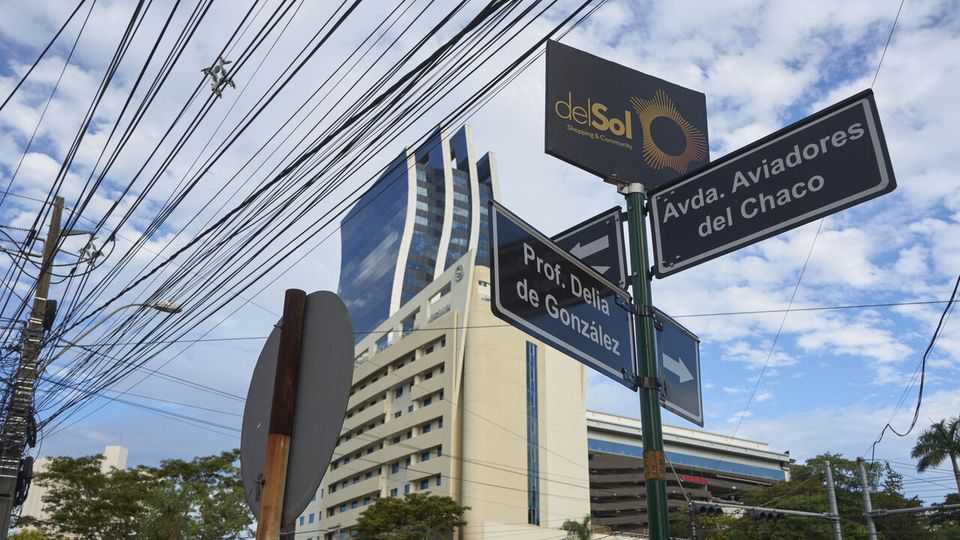
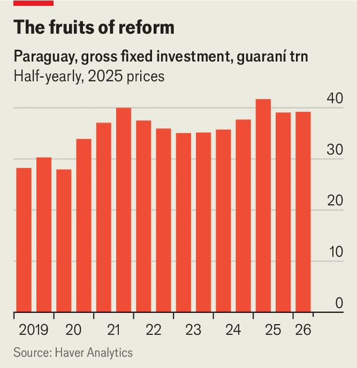

The investment frenzy gripping Paraguay
But corruption and poor infrastructure may hold growth back

Oct 8th 2026
AT THE AIRPORT in Asunción, Paraguay’s capital, Blanca, a regular traveller who lives nearby, used to recognise many faces in the arrivals hall. Mostly there were families waiting by the barriers, children running forward as relatives returned home. Now the crowds are too large. Last year Paraguay welcomed 3.7m international visitors, almost twice as many as in 2024.
Some are tourists; others are moving in. Last year immigration authorities recorded 47,600 residency applications, a record high and up by 63% on 2024. The numbers are still rising. “People didn’t used to come to Paraguay looking for opportunities,” says Blanca. “Now they do.”
After decades of steady macroeconomic management, the country has won a reputation for stability. Following a financial crisis in 2003, policymakers tightened fiscal policy, beefed up the central bank and tamed inflation, points out Alonso Chaverri Suárez of the Inter-American Development Bank. Ratings agencies have declared its debt to be investment grade, an accolade granted to only six countries in Latin America.

Since taking office in 2023, Santiago Peña, the president, has set out to turn Paraguay into an export-oriented manufacturing hub. He has eased red tape and expanded the “maquila regime”, under which firms can import materials duty-free and pay only 1% tax on value added, making Paraguay attractive for manufacturers. Exports of goods such as car parts, clothing and textiles were 25% higher last year than in 2019 in real terms, helping propel economic growth to 6.6%.
So far, investment has come mainly from domestic firms—expanding at home as confidence in the economy grows—and neighbouring countries. Paraguay’s membership of Mercosur, a trade bloc with Argentina, Brazil and Uruguay, gives manufacturers tariff-free access to a market of more than 260m people. A trade deal between the bloc and the European Union should further boost exports. Manufacturers from Brazil and Argentina, facing higher taxes and heavier regulation at home, are shifting production across the border.
Mr Peña has suggested Paraguay could surpass Uruguay and Chile in income per person. That goal remains distant. One in five Paraguayans still lives below the poverty line, though that share is falling. And the economy still relies on farming; food accounts for nearly 70% of merchandise exports. Manufacturing exports under the “maquila regime” make up just 2.5% of GDP and are largely low-value.
To support more complex growth, Paraguay needs a more skilled workforce, says José Manuel Salazar-Xirinachs, head of the UN’s Economic Commission for Latin America and the Caribbean. Public spending on education is just 3.5% of GDP, among the lowest in the region; in the latest PISA tests, Paraguayan students rank near the bottom.
Infrastructure is another constraint. Only 16% of Paraguay’s roads are paved, and road transport makes up around 26% of export costs. Asunción’s small airport is also struggling with rising traffic. Because Paraguay is landlocked, it depends on the 3,400km Paraná-Paraguay waterway for much of its trade. But droughts have made parts of this harder to navigate. The Inter-American Development Bank estimates that Paraguay will need around $10bn by 2030 to improve its roads, airports and urban transport. Though Paraguay has plenty of cheap hydroelectric power, its grid is wobbly, with frequent power cuts.
But there is little fiscal space to upgrade infrastructure. Paraguay’s tax take comes to just 16% of GDP, compared with 22% across Latin America and 34% in the OECD, a club of mainly rich countries. Its largely informal economy narrows the tax base. Upping taxes is politically tough because trust in the state is low, says Mr Salazar-Xirinachs. Higher taxes could weaken Paraguay’s main attraction to investors: its low costs and light regulation.
Borrowing is one option, since Paraguay’s credit rating allows it to raise money on international markets relatively cheaply. Another is to get private investors to finance infrastructure, but that would require better institutions: Paraguay ranks 150th out of 182 countries on Transparency International’s Corruption Perceptions Index (where lower is worse). Cutting a culture of kickbacks is far tougher than slashing red tape, but it is no less important. ■